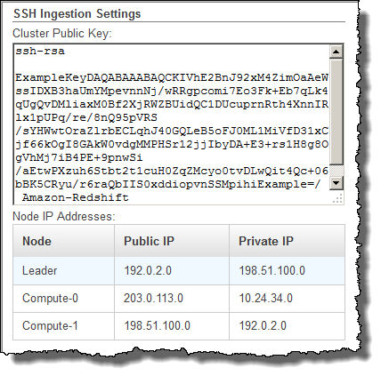

Le traduzioni sono generate tramite traduzione automatica. In caso di conflitto tra il contenuto di una traduzione e la versione originale in Inglese, quest'ultima prevarrà.
Fase 3: Recupero degli indirizzi IP dei nodi del cluster e della chiave pubblica del cluster Amazon Redshift
Come recuperare la chiave pubblica del cluster Amazon Redshift e gli indirizzi IP dei nodi del cluster tramite la console
-
Accedere alla console di gestione di Amazon Redshift.
-
Nel riquadro di navigazione scegli Clusters (Cluster).
-
Selezionare il cluster dall'elenco.
-
Individuare il gruppo SSH Ingestion Settings (Impostazioni di inserimento SSH).
Prendere nota dei valori di Cluster Public Key (Chiave pubblica del cluster) e Node IP addresses (Indirizzi IP del nodo). Queste informazioni saranno utili per le fasi successive.
Saranno utilizzati gli indirizzi IP privati nella fase 3 per configurare l'host Amazon EC2 affinché accetti la connessione da Amazon Redshift.
Per recuperare la chiave pubblica del cluster e gli indirizzi IP dei nodi del cluster tramite la CLI di Amazon Redshift, emettere il comando describe-clusters. Per esempio:
aws redshift describe-clusters --cluster-identifier <cluster-identifier>
La risposta includerà un ClusterPublicKey valore e l'elenco di indirizzi IP privati e pubblici, simili al seguente:
{ "Clusters": [ { "VpcSecurityGroups": [], "ClusterStatus": "available", "ClusterNodes": [ { "PrivateIPAddress": "10.nnn.nnn.nnn", "NodeRole": "LEADER", "PublicIPAddress": "10.nnn.nnn.nnn" }, { "PrivateIPAddress": "10.nnn.nnn.nnn", "NodeRole": "COMPUTE-0", "PublicIPAddress": "10.nnn.nnn.nnn" }, { "PrivateIPAddress": "10.nnn.nnn.nnn", "NodeRole": "COMPUTE-1", "PublicIPAddress": "10.nnn.nnn.nnn" } ], "AutomatedSnapshotRetentionPeriod": 1, "PreferredMaintenanceWindow": "wed:05:30-wed:06:00", "AvailabilityZone": "us-east-1a", "NodeType": "ds2.xlarge", "ClusterPublicKey": "ssh-rsa AAAABexamplepublickey...Y3TAl Amazon-Redshift", ... ... }
Per recuperare la chiave pubblica del cluster e gli indirizzi IP dei nodi del cluster per il cluster con l'API di Amazon Redshift, utilizzare l'operazione DescribeClusters. Per ulteriori informazioni, consulta describe-clusters nella Amazon Redshift CLI Guide o DescribeClustersnella Amazon Redshift API Guide.